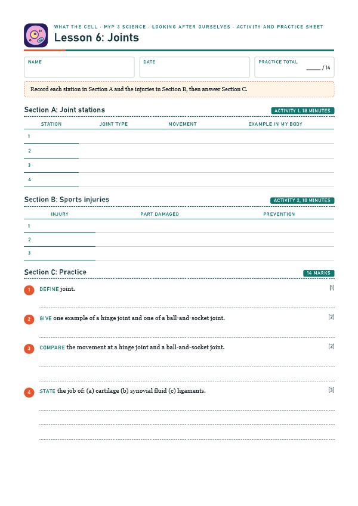

By the end of the lesson you can
- Define a joint
- Compare hinge, ball-and-socket and fixed joints
- Describe the parts of a synovial joint
- Explain how common sports injuries happen
Keys: arrows or a presentation clicker move the slides, F for full screen. Slides with a red dot have a video or simulation.
Videos (all 5 minutes or less)
- 4:40
Joints
FuseSchool. While you watch: Name three types of joint. Slide 10.
Simulations
- Lab
Print and practise

Activity and practice sheet
Used in the lesson’s activities, with practice questions. Your teacher has the answers.
Download (PDF)Lesson 6 slides
All 17 slides in one file, to read again or print. The video buttons on the slides open YouTube.
Download the slides (PDF)Revising? The Revision tab on the unit page has the unit notes and review.
Class activity pack
Everything to print for the lesson’s activities: picture cards, sorting mats, station cards with their kit lists, and the teacher’s set-up notes. Print it before class.
Download the activity pack (PDF)Notes: Joints
joint
A place where two bones meet. For example: knee, elbow, shoulder.
hinge joint
Moves in one direction, like a door. For example: knee, elbow.
ball-and-socket joint
Moves in all directions. For example: shoulder, hip.
cartilage
Smooth, tough tissue covering bone ends. For example: stops bones rubbing.
ligament
Strong tissue joining bone to bone. For example: holds the knee together.
synovial fluid
Oily liquid that lubricates a joint. For example: like oil in a hinge.
sprain
A stretched or torn ligament. For example: twisting an ankle.
Key words
| joint | where two bones meet |
|---|---|
| hinge joint | moves one way |
| ball-and-socket joint | moves all ways |
| cartilage | smooth tissue on bone ends |
| ligament | joins bone to bone |